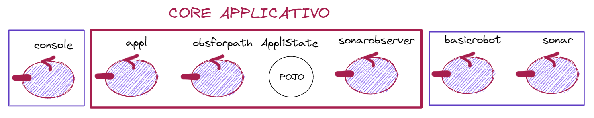

Appl1Actors23¶
Il viaggio iniziato enunciando i requisiti dell’Applicazione1 si è svolto in una sequenza di tappe:
Questi passi incrementali ci hanno indotto a una graduale transizione da un approccio alla progettazione e allo sviluppo di tipo bottom-up, che partiva dalle tecnologie disponibili, ad un approccio di tipo top-down, che parte dal problema, con l’obiettivo di individuare/selezionare/costruire le tecnologie più opportune per risolverlo.
In questa transizione, abbiamo introdotto nuovi concetti e nuove librerie di supporto:
Affrontiamo ora di nuovo gli stessi requisiti, con una estensione legata alla presenza di uno o più Sonar nella stanza in cui si muove il VirtualRobot.
BoundaryWalker: nuovi requisiti¶
Impostare un sistema software che permette ad un utente umano di inviare, mediante una Console, comandi:
start: per indurre il VirtualRobot a percorrare il bordo perimetrale (libero da ostacoli) della stanza rappresentata ne La scena di WEnv
stop: per bloccare il robot
resume: per riattivare il robot
getPath: per ottenere dal robot informazioni sul cammino percorso
Inoltre è richiesto di:
fare in modo che il robot si fermi per un tempo prefissato (
2sec) ogni volta che esso viene rilevato da uno dei Sonar cablati nelle pareti della stanza.il VirtualRobot possa essere sostituito da un robot fisico
Appl1Actors23 - Analisi dei requisiti¶
In aggiunta all’analisi già condotta negli Sprint precedenti (Appl1-HTTPSprint1, Appl1-HTTPSprint2, Appl1-HTTPSprint3) , evidenziamo un nuovo requisito:
l’applicazione appl deve poter ricevere dati dai sonar presenti, quando essi rilevano un passaggio del basicrobot;
i dati emessi dai sonar devono essere interpretati come un comando di stop, con resume automatica, dopo il tempo prefissato;
per sonar il committente intende un dispositivo in grado di rilevare la distanza di oggetti posti davati ad esso e renderne disponibile il valore ai componenti dell’applicazione, preferibilmente senza doverli conoscere.
Appl1Actors23 - Analisi del problema¶
In Principi si è detto che la descrizione di un sistema software può avvenire focalizzando l’attenzione su almeno tre diversi punti di vista:

|
|
Al centro della analisi di un sistema distribuito, prima ancora di considerare il comportamento dei singoli componenti, è bene porre l’interazione tra le parti.
Quindi la nostra analisi verrà svolta come nel seguente ordine:
Struttura: Indivuazione dei del sistema e della loro natura.
Interazione: Analisi sulla interazione tra i macro-componenti.
Comportamento: Analisi sul comportamento di ciscun macro-componente.
L’obiettivo è individuare una architettura logica<L’architettura logica> di riferimento, che verrà poi ulteriormente specificata (cona zioni di entro i macro-componenti) in fase di progetto
Analisi: struttura¶
Il sistema è distribuito e ciascun macro-componente può essere modellato come un attore. L’attore basicrobot rappresenta un robot generico, che nasconde i dettagli relativi all’uso del VirtualRobot o di un robot fisico. L’attore sonar produce vaori di distanza, ma non ha conoscenza dei componenti del sistema. |

|
Analisi: interazione¶
|

|
Dal punto di vista logico deve esistere un componente capace di trasformare un evento del Sonar in un comando stop verso appl, seguito poi da un comando resume
La responsabilità di gestione degli eventi emessi dai sonar non può essere assegnata a nessuno degli altri componenti. Introduciamo un nuovo componente applicativo, cui assegnare questa responsabilità
Il nuovo componente sonarobserver percepisce gli eventi emessi dai sonar e genera i comandi stop/resume. |

|
E’ molto probabile che il sonar emetta una sequenza di più eventi in serie. Occorre fare in modo che solo il primo evento della serie innsechi uno stop (con relativo successivo resume).
Trasformare un evento del sonar in un comando stop seguito poi da una resume, equivale a pensare che l’applicazione possa essere comandata da due console. Per evitare interferenze, occorre che la console di utente venga disabilitata/ignorata quando si manifesta uno stop dovuto al sonar.
Un utente umano ptrebbe premere i pulsanti della console in una sequenza errata.

|
Possibili errori:
|
Analisi: comportamento¶
Ogni attore opera in modo message-driven. Tuttavia, risulta spesso più opportuno impostare il comportamento di un Attore come un Automa a Stati Finiti che decide in ogni stato quali messaggi elaborare.
Al momento proseguiano con lo schema message-driven. La versione FSM verrà costruita più avanti (si veda Appl1ActorsFsm23).
Appl1Actors23 - Progetto¶
Rispetto a quanto già sviluppato in Appl1-WSSprint3, osserviamo che: appl non è più un POJO Observable.
La responsabilità di costruire una rappresentazione del path del robot può essere ancora affidata a un observer (ObserverActorForPath). Questo observer è ora concepito come un attore nello stesso contesto di appl, che fa una subscribeLocalActor a appl per acquisire le informazione emesse mediante emitLocalStreamEvent. |

|
Appl1State¶
In questa prima versione del progetto, si suppone che le informazioni sullo stato dell’applicazione, incluso il path corrente del robot, siano mantenute in Appl1State, che rappresenta una sorta di base di conoscenza locale, che il componente appl1 può consultare quando deve dare un risposta a getpath.
unibo.appl1.observer.ObserverActorForPath¶
La classe che implementa l’attore obsforpath può essere così definita:
public class ObserverActorForPath extends ActorBasic23 {
public ObserverActorForPath(String name, ActorContext23 ctx) {
super(name, ctx);
...
subscribeLocalActor("appl");
}
...
protected void updatePath(String newMOve){
moveHistory.add(newMOve);
Appl1State.setPath(getCurrentPath());
}
@Override
protected void elabMsg(IApplMessage inputmsg) throws Exception {
...
if( ! inputmsg.isEvent() ) return;
String msg = inputmsg.msgContent();
...
if( msg.contains("robot-stepdone")){
updatePath("w");
}else if( msg.contains("robot-turnLeft")){
updatePath("l");
}
else if( msg.contains("robot-collision")){
updatePath("|");
}
}
}
Supponiamo che, per costruire la risposta alla richiesta getpath, l’attore appl necessiti di molto tempo di elaborazione.
Per evitare di rendere appl incapace di elaborare altri messaggi mentre sta eleborando la risposta , si potrebbe incapsulare l’esecuzione di getpath a un Thread.
Ma allora, un soluzione più elegante, ispirata al principuo divide et impera, può essere quella di delegare ad un altro attore la responsabilità di rispondere a questa richiesta.
Tenendo conto anche del principio del Rasoio di Occam, possiamo pensare che appl deleghi la gestione della richiesta getpath al componente obsforpath, che ha tutte le informazioni necessarie.
public class ObserverActorForPath extends ActorBasic23 {
...
@Override
protected void elabMsg(IApplMessage inputmsg) throws Exception {
...
/GESTRIONE DELEGATA
if( inputmsg.isRequest() && inputmsg.msgId().equals("getpath")){/
IApplMessage answer = CommUtils.buildReply( name,"getpathanswer",
"'"+getCurrentPath()+"'", inputmsg.msgSender());
reply(answer, inputmsg);
return;
}
}
}
Un punto rilevante è che il componente console non debba modificare il suo codice (cioè la sua interazione con appl).
In modo analogo a quanto fatto negli Sprint precedenti, definiamo un supporto che interagisca con il robot utilizzando una connessione di rete. Limitadonci per ora al caso del VirtualRobot, definiamo un supporto che utilizza interazioni asincrone su WS.
Tenendo conto del supporto ‘orientato agli attori’ introdotto in VrobotHLMovesInteractionAsynch.update come produttore definiamo una nuova versione che elabora le informazioni emesse dai Sonar generando un evento.
appl1Actors23.support.VrobotHLMovesActors23¶
Il nuovo supporto comunica in modo asincrono con il VirtualRobot e traduce le informazioni ricevute da WEnv in messaggi ad appl. Quando riceve informazioni realative al sonar, genera un evento locale che viene poi elaborato da obspath. |

|
public class VrobotHLMovesActors23 extends ApplAbstractObserver
implements IVrobotMovesAsynch {
protected ActorBasic23 appl;
...
public VrobotHLMovesActors23(Interaction wsCommSupport, ActorBasic23 appl) {
//pone sè stesso come observer di wsCommSupport
...
@Override
public void update(String info) {
if (jsonObj.get("sonarName") != null) {
long d = (long) jsonObj.get("distance") ;
IApplMessage sonarEvent = CommUtils.buildEvent(
"vrhlsprt","sonardata","'"+"sonar(" +d + " )"+"'");
//msg(sonardata,event,vrhlsprt,ANY,'sonar( D )',N)
Actor23Utils.emitLocalEvent( sonarEvent,appl ); //elaborato da sonarobs
//Questo 'alieno' usa l'utility per indurre appl ad emettere l'evento
}
if (jsonObj.get("endmove") != null) {
...
//genera:
// msg(stepdone,dispatch,support,appl,stepdone(DT),N)
// msg(stepfailed,dispatch,support,appl,stepfailed(DT,CAUSE),N)
}
}
}
La presenza dell’oggetto Appl1State evidenzia che :
il progettista ha optato per una rappresentazione concentrata dello stato;
il componente obsforpath deve aggiornare Appl1State per ogni mossa osservata.
Se optiamo per una rappresentazione distribuita dello stato, allora il valore corrente del path può rimanere confinato entro obsforpath e l’idea di delega delle richieste getpath permette di renedere visibile questo stato alla console, senza influire sulla reattività di appl ai nuovi messaggi.
SonarObserverActor23¶
Il componente che percepisce gli eventi emessi dai sonar e genera i comandi stop/resume evita la emissione di molteplici stop/resume controllando il valore della distanza rilevata.
public class SonarObserverActor23 extends ActorBasic23 {
protected String sonarDistance = null;
...
@Override
protected void elabMsg(IApplMessage message) throws Exception {
//Evita gestione multipla - equals should be relaxed ...
if( sonarDistance != null && message.msgContent().equals(sonarDistance) ) {
return;
}
sonarDistance = message.msgContent();
//Evita gestione di altri messaggi
if( ! message.isEvent() || ! message.msgId().equals("sonardata") ) return;
String data = message.msgContent().replaceAll("'","");
String value = ((Struct)Term.createTerm(data)).getArg(0).toString();
int v = Integer.parseInt(value);
//Realizza stop/resume
forward( stopMsg );
CommUtils.delay(2000); //DA SPECIFICA
forward(resumeMsg);
}
}
appl1Systems.actorBasic.Appl1Actors23¶
public class Appl1CoreActor23 extends ActorBasic23 {
...
@Override
protected void elabMsg(IApplMessage message) throws Exception {
String payload = message.msgContent();
if( message.msgId().equals("startcmd")){
if( Appl1StateObject.getStarted() ){
CommUtils.outred(name + " | ALREADY STARTED " + Thread.currentThread().getName() );
return;
}
Appl1StateObject.readConfigFromFile(this);
Appl1StateObject.reset();
Appl1StateObject.setIsRunning(true);
Appl1StateObject.setStarted(true);
IApplMessage event = CommUtils.buildEvent(name,"startobs", "ok");
emitLocalStreamEvent(event);
if( ! Appl1StateObject.robotMustBeAtHome("START",this) ){
CommUtils.outred(name + " | elabMsg: NOT AT HOME " );
throw new Exception("Robot must be at home");
};
Appl1StateObject.doStepAsynch();
return;
}
if( message.msgId().equals("stopcmd")){
Appl1StateObject.setStopped(true);
return;
}
if( message.msgId().equals("resumecmd")){
Appl1StateObject.setStopped(false);
Appl1StateObject.doStepAsynch();
return;
}
if( message.msgId().equals("getpath")){
//ELABORAZIONE DELEGATA
Actor23Utils.sendMsg(message, ctx, "obsforpath");
return;
}
if( message.msgId().equals("isrunning")){
//ELABORAZIONE DELEGATA
Actor23Utils.sendMsg(message, ctx, "obsforpath");
return;
}
if( payload.startsWith("stepdone")){
if( Appl1StateObject.getIsRunning() && ! Appl1StateObject.getStopped() )
stepok.handle(payload);
return;
}
if( payload.startsWith("stepfailed") ){
if( Appl1StateObject.getIsRunning() && ! Appl1StateObject.getStopped() )
stepfail.handle(payload);
return;
}
if( payload.startsWith("collision")){
CommUtils.outred(name + " | elab COLLISION");
return;
}
if( payload.contains("sonar")){ //'sonar(-21)'
return;
}
}
IApplAction stepok¶
protected IApplAction stepok = (msg -> {
try{
CommUtils.outmagenta("%%% stepok:" + msg + " " + Thread.currentThread().getName());
Appl1StateObject.updateObservers("robot-stepdone",this);
//checkStop();
Appl1StateObject.incNSteps();
CommUtils.delay(300); //to view steps better
Appl1StateObject.doStepAsynch();
}catch(Exception e){ ... }
});
IApplAction stepfail¶
protected IApplAction stepfail = (msg -> {
try{
Struct t = (Struct)Term.createTerm(msg);
String cause = t.getArg(1).toString();
if( cause.contains("collision")) {
Appl1StateObject.updateObservers("robot-collision",this);
Appl1StateObject.incNEdges();
Appl1StateObject.getVr().turnLeft();
Appl1StateObject.updateObservers("robot-turnLeft",this);
if (Appl1StateObject.getNEdges() < 4) Appl1StateObject.doStepAsynch();
else {
Appl1StateObject.reset();
Appl1StateObject.robotMustBeAtHome("END",this);
}
}
}catch(Exception e){ ... }
});
}
Appl1Actors23 - Distribuzione¶
{kind=link}
Il Core Applicativo può essere descritto come segue:
%================================================================================
% appl1CoreActor23.pl description
%================================================================================
context(ctxall, "localhost", "TCP", "8720").
qactor( appl, ctxall, "appl1Systems.actorBasic.Appl1CoreActor23").
qactor( sonarobserver, ctxall, "appl1Actors23.SonarObserverActor23").
qactor( obsforpath, ctxall, "appl1Actors23.observeractor.ObserverActorForPath").
%%qactor( console, ctxall, "appl1Actors23.CmdConsoleActor23").